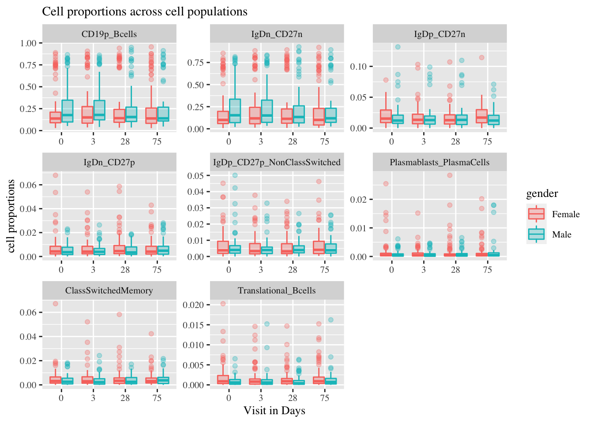
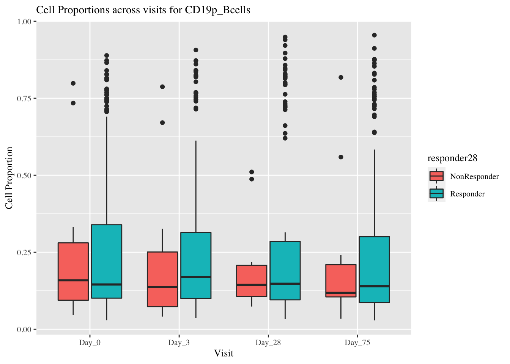
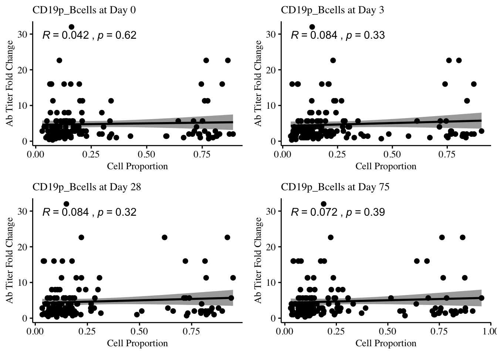
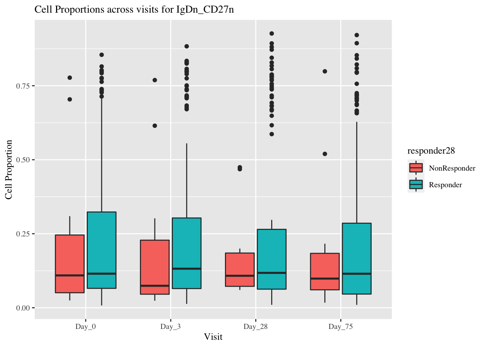
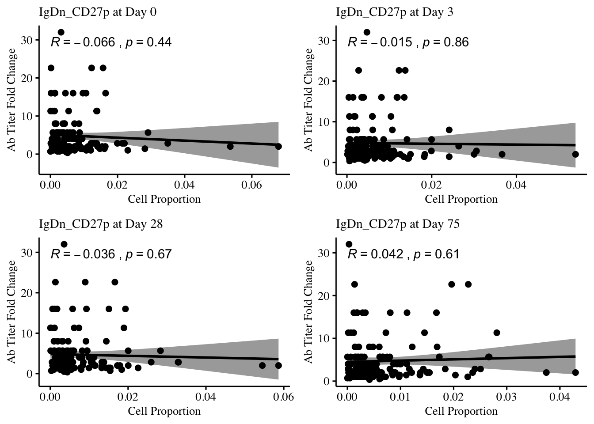
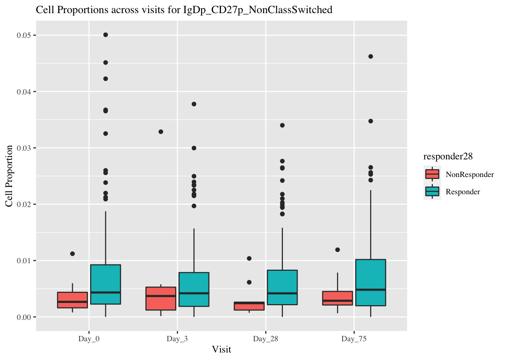
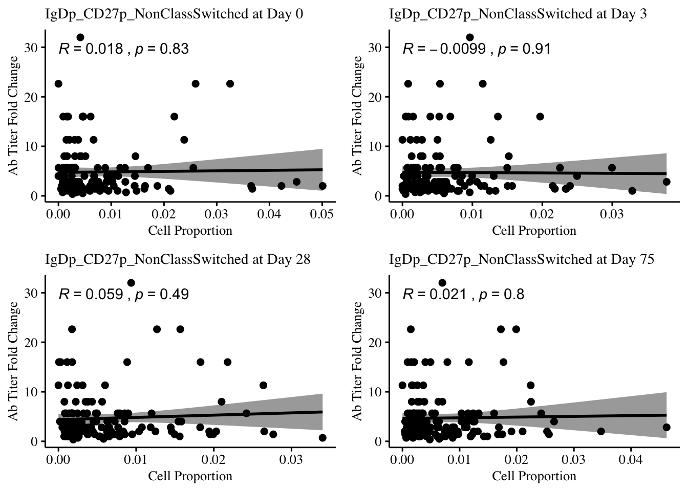
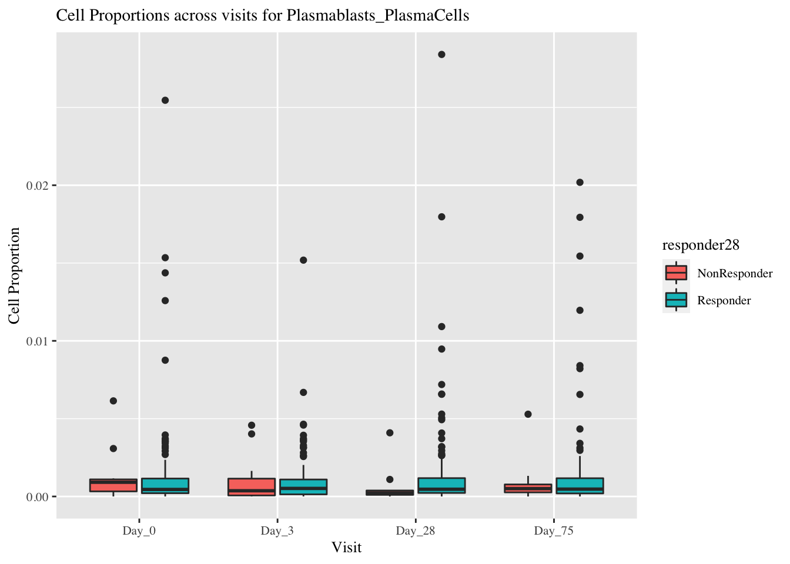
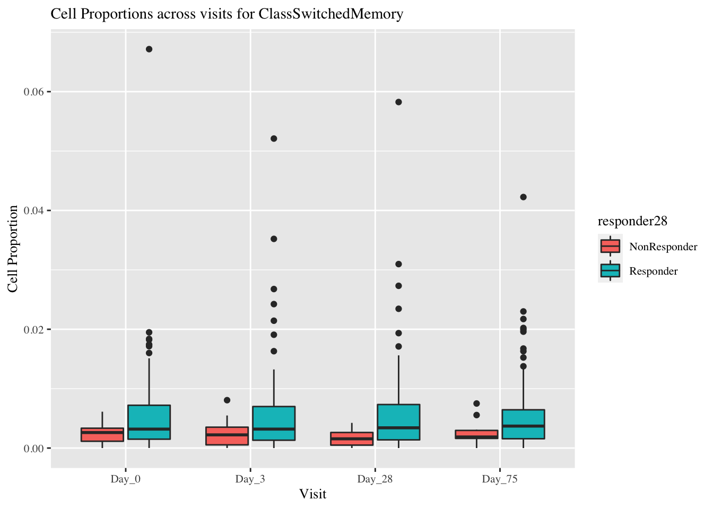
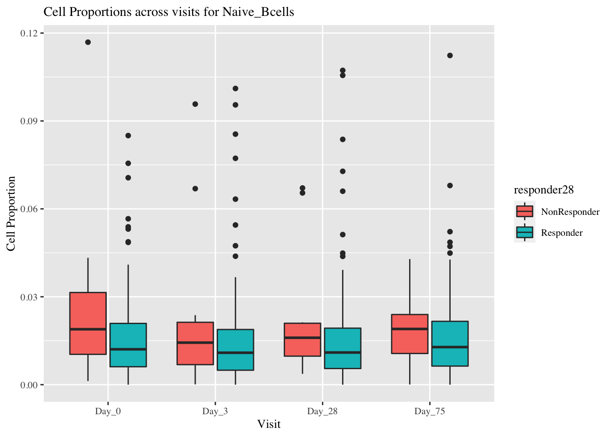

SDY67
SDY67: B-cells panel
SDY67 related published articles are 1, 2, 3 and 4
A) Gating Hierarchy and Cell Populations
- CD19+ CD3- Bcells
- IgD- CD27-
- IgD+ CD27-
- IgD- CD27+
- IgD+ CD27+ NonClassswitched
- Plasmablasts and Plasma cells
- Class switched memory cells
- Translational Bcells
- Naive Bcells

B-cell panel gating hierarchy
B) Metadata
## name file_info_id expsample_accession
## 486 rk0425b_rk__004.527718.fcs 527718 ES845077
## 487 rk0425b_rk__005.527725.fcs 527725 ES845078
## 488 rk0425b_rk__006.527726.fcs 527726 ES845079
## 489 rk0425b_rk__007.527727.fcs 527727 ES845080
## 490 rk0425b_rk__008.527728.fcs 527728 ES845081
## 491 rk0425b_rk__009.527729.fcs 527729 ES845082
## biosample_accession study_time_collected subject_accession type
## 486 BS756158 0 SUB113571 PBMC
## 487 BS756159 3 SUB113571 PBMC
## 488 BS756160 28 SUB113571 PBMC
## 489 BS756161 75 SUB113571 PBMC
## 490 BS756162 0 SUB113483 PBMC
## 491 BS756163 3 SUB113483 PBMC
## max_subject_age arm_accession description
## 486 67 ARM544 150 healthy adults, 50-74 yo
## 487 67 ARM544 150 healthy adults, 50-74 yo
## 488 67 ARM544 150 healthy adults, 50-74 yo
## 489 67 ARM544 150 healthy adults, 50-74 yo
## 490 54 ARM544 150 healthy adults, 50-74 yo
## 491 54 ARM544 150 healthy adults, 50-74 yo
## ethnicity gender race
## 486 Not Hispanic or Latino Female White
## 487 Not Hispanic or Latino Female White
## 488 Not Hispanic or Latino Female White
## 489 Not Hispanic or Latino Female White
## 490 Not Hispanic or Latino Male White
## 491 Not Hispanic or Latino Male WhiteC) Merging meta data and Cell Proportions
The cell proportions are calculated with Live Leukocytes in population 1 as the parent.
Description
There are 621 FCS files from 149 subjects.
## $study_time_collected
##
## 0 3 28 75
## 154 154 155 159
##
## $subject_accession
##
## SUB113453 SUB113454 SUB113455 SUB113456 SUB113458 SUB113459 SUB113460
## 4 4 4 8 4 4 4
## SUB113461 SUB113462 SUB113463 SUB113464 SUB113465 SUB113466 SUB113467
## 4 4 4 4 4 3 4
## SUB113468 SUB113469 SUB113470 SUB113471 SUB113472 SUB113473 SUB113475
## 4 4 4 4 4 2 4
## SUB113476 SUB113477 SUB113478 SUB113479 SUB113480 SUB113481 SUB113482
## 4 4 4 4 4 4 8
## SUB113483 SUB113484 SUB113485 SUB113486 SUB113487 SUB113488 SUB113489
## 4 4 4 4 2 4 4
## SUB113491 SUB113492 SUB113494 SUB113495 SUB113496 SUB113497 SUB113498
## 8 4 4 4 4 3 4
## SUB113499 SUB113500 SUB113501 SUB113502 SUB113503 SUB113504 SUB113505
## 4 4 4 4 4 4 4
## SUB113506 SUB113507 SUB113508 SUB113509 SUB113510 SUB113512 SUB113513
## 8 4 4 4 4 8 4
## SUB113514 SUB113515 SUB113516 SUB113517 SUB113518 SUB113520 SUB113521
## 1 4 4 4 1 4 8
## SUB113522 SUB113523 SUB113524 SUB113525 SUB113526 SUB113527 SUB113528
## 4 8 4 4 4 4 4
## SUB113529 SUB113530 SUB113531 SUB113532 SUB113533 SUB113534 SUB113535
## 4 4 8 4 4 4 4
## SUB113536 SUB113537 SUB113538 SUB113539 SUB113540 SUB113541 SUB113542
## 4 4 4 4 4 4 4
## SUB113543 SUB113544 SUB113545 SUB113546 SUB113547 SUB113548 SUB113549
## 4 4 4 4 1 1 8
## SUB113550 SUB113551 SUB113552 SUB113553 SUB113554 SUB113555 SUB113556
## 4 1 4 8 4 4 4
## SUB113557 SUB113558 SUB113559 SUB113560 SUB113562 SUB113563 SUB113564
## 4 4 4 4 4 4 4
## SUB113565 SUB113566 SUB113567 SUB113568 SUB113569 SUB113570 SUB113571
## 4 4 4 2 4 4 4
## SUB113573 SUB113574 SUB113575 SUB113576 SUB113577 SUB113578 SUB113579
## 4 8 2 4 4 4 4
## SUB113580 SUB113581 SUB113582 SUB113583 SUB113584 SUB113585 SUB113586
## 4 4 4 4 4 4 8
## SUB113587 SUB113588 SUB113589 SUB113590 SUB113591 SUB113592 SUB113593
## 4 4 4 4 4 4 4
## SUB113594 SUB113595 SUB113596 SUB113598 SUB113599 SUB113600 SUB113601
## 4 2 3 3 4 4 4
## SUB113602 SUB113603 SUB113604 SUB113605 SUB113606 SUB113607 SUB113608
## 4 4 8 4 3 4 4
## SUB113610 SUB113611
## 4 8## $max_subject_age
##
## 50 51 52 53 54 55 56 57 58 59 60 61 62 63 64 65 66 67 68 69 70 71 72 73
## 9 5 2 9 6 16 5 10 7 13 6 5 4 5 4 2 5 4 5 5 4 2 9 7
##
## $gender
##
## Female Male
## 93 56
##
## $race
##
## Asian Other White
## 1 1 147
##
## $Age_cat
##
## young old
## 82 67Plots
## Warning: Removed 8 rows containing non-finite values (stat_boxplot).## Warning: Removed 8 rows containing non-finite values (stat_boxplot).
## Warning: Removed 8 rows containing non-finite values (stat_boxplot).D) Antibody titer
seroprotection refers to those individuals with a titer of 1:40 or better. Seroconversion is defined as an increase in HI titer following vaccination of fourfold or greater. Multiplicity factor is an increase compared to baseline with 2.5 or greater.
HAI
NAI
E) Correlation between titer and cell proportions

SDY67: Dendritic cells panel
SDY67 related published articles are 1, 2, 3 and 4
A) Gating Hierarchy and Cell Populations
- CD3+ CD56- Tcells
- CD3- CD56+ NK cells
- CD20+ Bcells
- CD16+ Neutrophils
- CD14+ Monocytes
- CD3- CD20- CD14- HLA-DR+ Dendritic cells
- CD11c- CD123+ pDC
- CD11c+ CD16- mDC
- CD11c+ CD16+ mDC


B) Metadata
## name file_info_id expsample_accession
## 39 rk020911a__006.526956.fcs 526956 ES844630
## 40 rk020911a__007.526957.fcs 526957 ES844631
## 41 rk020911a__008.526958.fcs 526958 ES844632
## 42 rk020911a__009.526959.fcs 526959 ES844633
## 43 rk020911a__010.526960.fcs 526960 ES844634
## 44 rk020911a__011.526961.fcs 526961 ES844635
## biosample_accession study_time_collected subject_accession type
## 39 BS753675 3 SUB113558 PBMC
## 40 BS753676 28 SUB113496 PBMC
## 41 BS753677 0 SUB113496 PBMC
## 42 BS753678 3 SUB113496 PBMC
## 43 BS753679 28 SUB113495 PBMC
## 44 BS753680 0 SUB113495 PBMC
## max_subject_age arm_accession description
## 39 55 ARM544 150 healthy adults, 50-74 yo
## 40 60 ARM544 150 healthy adults, 50-74 yo
## 41 60 ARM544 150 healthy adults, 50-74 yo
## 42 60 ARM544 150 healthy adults, 50-74 yo
## 43 60 ARM544 150 healthy adults, 50-74 yo
## 44 60 ARM544 150 healthy adults, 50-74 yo
## ethnicity gender race
## 39 Not Hispanic or Latino Female White
## 40 Not Hispanic or Latino Female White
## 41 Not Hispanic or Latino Female White
## 42 Not Hispanic or Latino Female White
## 43 Not Hispanic or Latino Male White
## 44 Not Hispanic or Latino Male WhiteC) Merging meta data and Cell Proportions
The cell proportions are calculated with Live Leukocytes in population 1 as the parent.
Description
There are 439 FCS files from 147 subjects.
## $study_time_collected
##
## 0 3 28
## 146 147 146
##
## $subject_accession
##
## SUB113453 SUB113454 SUB113455 SUB113456 SUB113457 SUB113459 SUB113460
## 3 3 3 3 3 3 3
## SUB113461 SUB113462 SUB113463 SUB113464 SUB113465 SUB113466 SUB113467
## 3 3 3 3 3 3 3
## SUB113468 SUB113469 SUB113471 SUB113472 SUB113473 SUB113474 SUB113475
## 3 3 3 3 3 3 3
## SUB113477 SUB113478 SUB113479 SUB113480 SUB113481 SUB113482 SUB113484
## 3 3 3 3 3 3 3
## SUB113485 SUB113486 SUB113488 SUB113489 SUB113490 SUB113491 SUB113492
## 3 3 3 3 3 3 3
## SUB113493 SUB113494 SUB113495 SUB113496 SUB113497 SUB113498 SUB113499
## 2 3 3 3 3 3 3
## SUB113500 SUB113501 SUB113502 SUB113503 SUB113504 SUB113505 SUB113506
## 3 3 3 3 3 3 3
## SUB113507 SUB113508 SUB113509 SUB113510 SUB113511 SUB113512 SUB113513
## 3 3 3 3 3 3 3
## SUB113514 SUB113515 SUB113516 SUB113517 SUB113518 SUB113519 SUB113520
## 3 3 3 3 3 3 3
## SUB113521 SUB113522 SUB113523 SUB113524 SUB113525 SUB113526 SUB113528
## 3 3 3 3 3 3 3
## SUB113529 SUB113530 SUB113531 SUB113532 SUB113533 SUB113534 SUB113535
## 3 3 3 3 3 3 3
## SUB113536 SUB113537 SUB113538 SUB113539 SUB113540 SUB113541 SUB113542
## 3 3 3 3 3 3 3
## SUB113543 SUB113544 SUB113545 SUB113546 SUB113547 SUB113549 SUB113550
## 3 3 3 3 3 3 3
## SUB113551 SUB113552 SUB113553 SUB113554 SUB113555 SUB113556 SUB113557
## 3 3 3 3 3 3 3
## SUB113558 SUB113559 SUB113560 SUB113562 SUB113563 SUB113564 SUB113565
## 1 3 3 3 3 3 3
## SUB113566 SUB113567 SUB113568 SUB113569 SUB113570 SUB113572 SUB113573
## 3 3 3 3 3 3 3
## SUB113574 SUB113575 SUB113576 SUB113577 SUB113578 SUB113579 SUB113580
## 3 4 3 3 3 3 3
## SUB113581 SUB113582 SUB113583 SUB113584 SUB113585 SUB113586 SUB113587
## 3 3 3 3 3 3 3
## SUB113588 SUB113589 SUB113590 SUB113591 SUB113592 SUB113593 SUB113594
## 3 3 3 3 3 3 3
## SUB113596 SUB113597 SUB113598 SUB113599 SUB113600 SUB113601 SUB113602
## 3 3 3 3 3 3 3
## SUB113604 SUB113605 SUB113606 SUB113607 SUB113608 SUB113609 SUB113611
## 3 3 3 3 3 3 3## $max_subject_age
##
## 50 51 52 53 54 55 56 57 58 59 60 61 62 63 64 65 66 67 68 69 70 71 72 73
## 10 5 2 10 4 16 5 11 7 14 6 4 4 4 4 2 6 2 4 4 5 2 9 7
##
## $gender
##
## Female Male
## 91 56
##
## $race
##
## Asian Other White
## 1 1 145
##
## $Age_cat
##
## young old
## 84 63Plots


D) Antibody titer
seroprotection refers to those individuals with a titer of 1:40 or better. Seroconversion is defined as an increase in HI titer following vaccination of fourfold or greater. Multiplicity factor is an increase compared to baseline with 2.5 or greater.
HAI


NAI

E) Correlation between titer and cell proportions